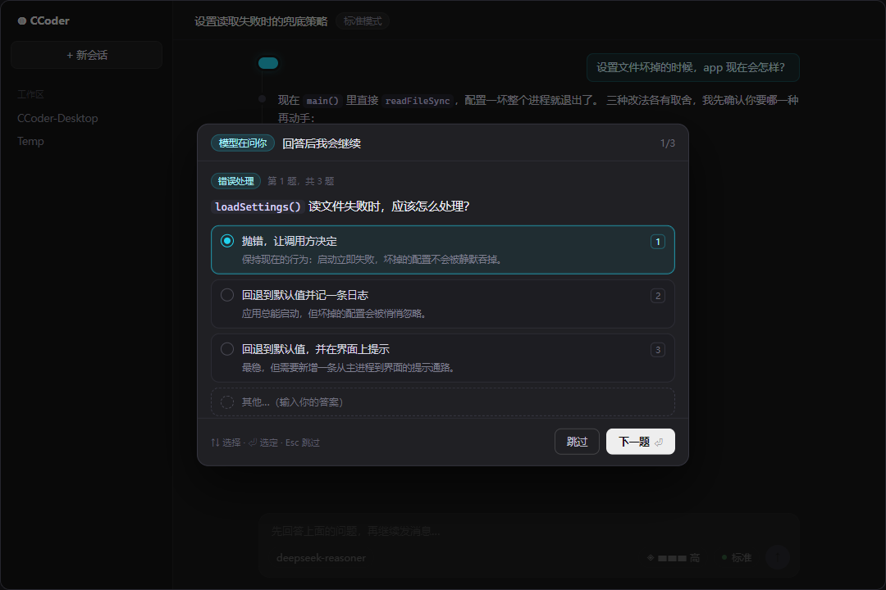
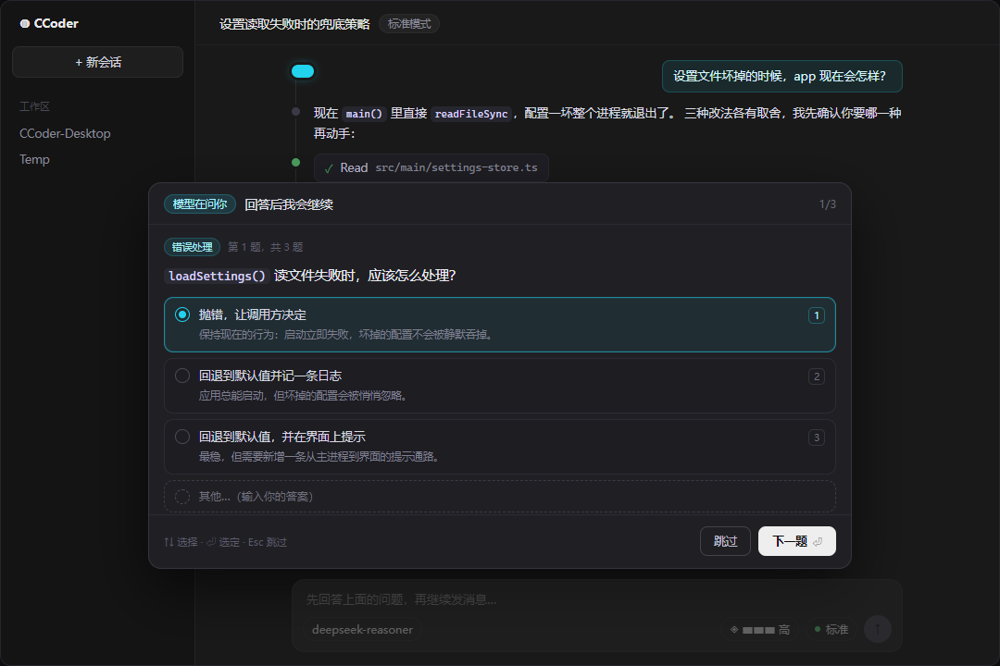
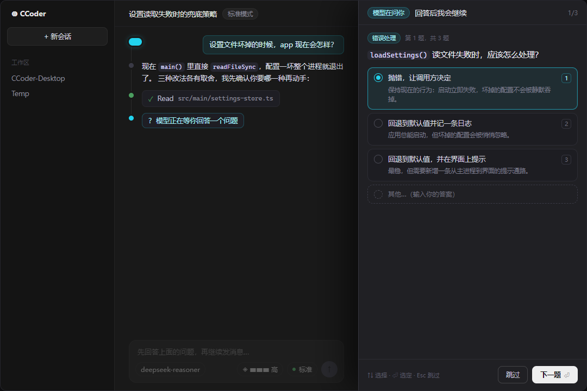
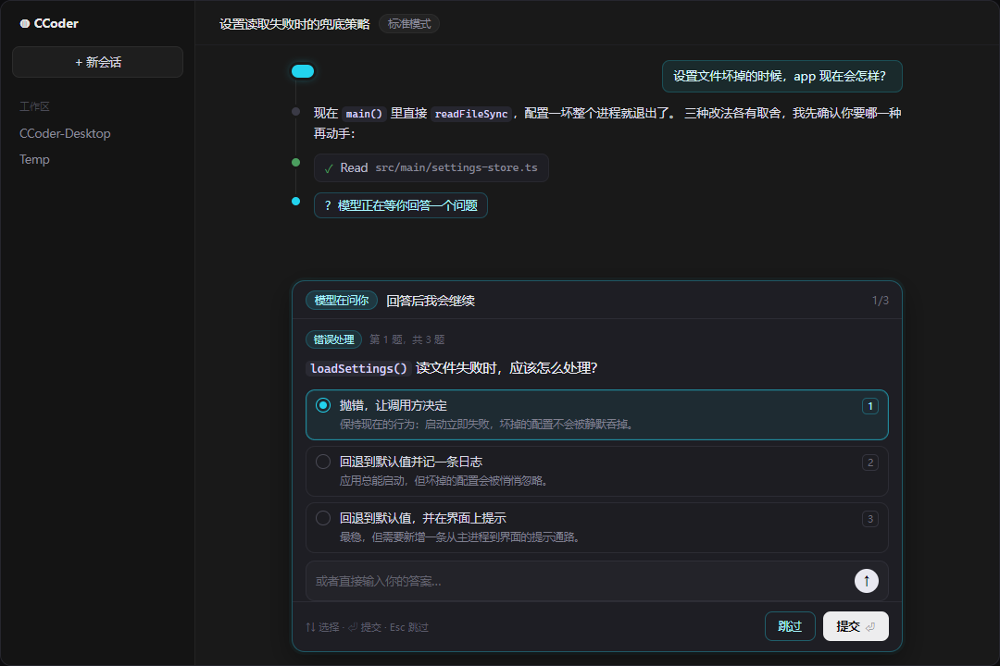

同一道题、同一套配色，只换承载方式。样例是 CLI 的 input.questions[0]：
单选题 + 三个选项 + 「其他…」。多选题会换成方块 + 空格勾选，题号与进度复用现有 1/N 语法。




推荐 B：提问和审批不同 —— 审批看的是弹窗里的 diff，提问往往要回看上面几句讨论才能回答，
所以「不遮上下文 + 手在输入框」的底部抽屉更合适。
交互约定（四案通用）：↑↓ 移动 · 1/2/3 直选 · ⏎ 选定/下一题 · 多选用 Space · Esc 跳过 ·
「其他…」展开自由输入。答完后沿用现有时间线留痕，记成一条「提问 · 已答」。